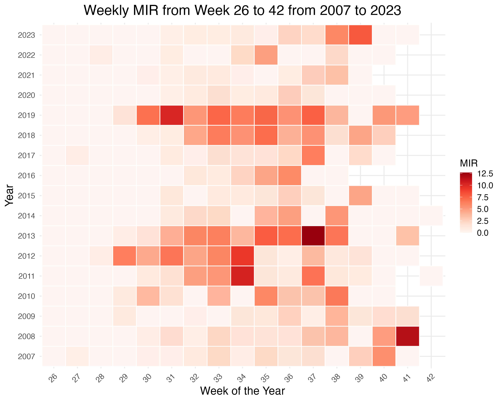
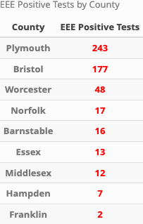
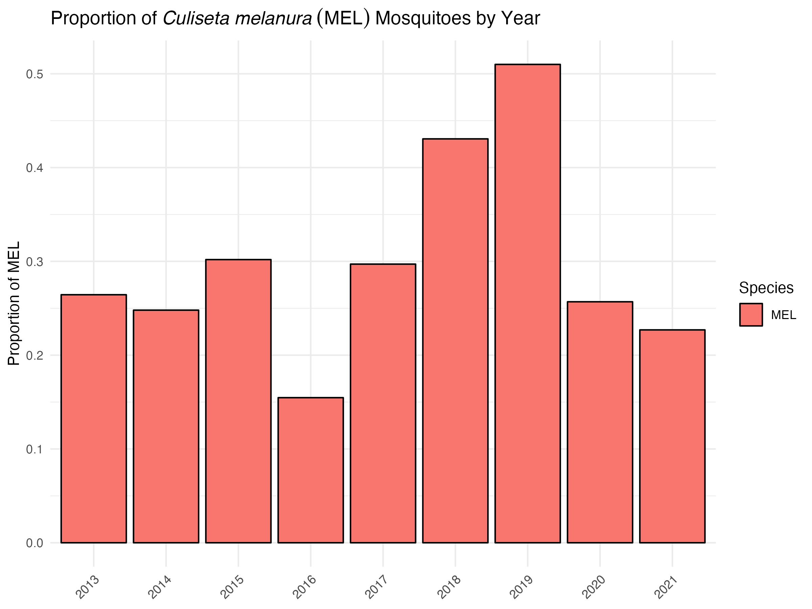

flowchart TB
id1["Questions"] --> id2["Data Collection"]
id2 --> id3["Data Loading and Cleaning"]
id3 --> id4["Data Cleaning"]
id4 --> id5["Data Transformation"]
id5 --> id6["Data Exploration & Visualization"]
id6 --> id7["Data Modeling"]
id7 --> id8["Evaluation"]
id8 -.-> id1
id8 --> id9[Interpretation]
id9 --> id10[Communication]
classDef mainProcess fill:#fff,stroke:#333,stroke-width:2px;
class id1,id2,id3,id4,id5,id6,id7,id8,id9,id10 mainProcess
title: “DRAFT: Factors Influencing Abundance & Virus Isolation in Mosquitoes” subtitle: “Which environmental, ecological, and temporal factors impact mosquito populations” author: Andrew Ruiz date: “2024-04-04” md_number: true format: docx: toc: false number-sections: true highlight-style: github editor: markdown: wrap: 72 bibliography: - ../../assets/project_mada.bib latex: preamble: |
Summary/Abstract
This project will inform the development of my dissertation prospectus by identifying significant relationships between variables and guide the methods development. Eastern equine encephalitis (EEE) is caused by an Alphavirus transmitted to humans by the bite of an infected mosquito. Human infections are rare, but serious. About 30-50% of symptomatic cases lead to death and those who survive are left with life-long disability. The transmission cycle for EEE includes two distinct cycles: an amplifying enzootic cycle in which the virus is transmitted between the Culiseta melanura mosquito and birds and an epizootic cycle in which bridge vector mosquitoes transmit the EEE virus (EEEv) from birds to humans and other mammals. Because C. melanura feeds almost exclusively on birds, it is not considered a direct human threat. However, EEEv isolations in C. melanura are an early warning sign that EEEv is circulating in the ecosystem. Isolations in bridge vector mosquito species indicate heightened transmission risk to humans.
Problem statement
Which environmental,ecological, and temporal factors influence the transmission cycles for EEE in southeastern Massachusetts and which models best describe the relationship between these factors.
This project will lay the foundation for dissertation research that will begin in June, 2024.
Introduction
Background
Eastern equine encephalitis (EEE) is caused by an Alphavirus transmitted to humans by the bite of an infected mosquito. Human infections are rare, but serious [@lindseyEasternEquineEncephalitis2018]. Humans and other mammals are dead-end hosts for EEE. About 94% of human EEE infections are asymptomatic. While symptomatic cases are rare, the consequences can be severe. Mortality rates associated with symptomatic infections range from 30 to 50%. Those who survive often experience lifelong disability that includes debilitating neurological damage. On average, there are 11 cases reported in the US annually. Most occur in Massachusetts and Florida. Until recently, nearly all human EEE cases in Massachusetts occurred in two counties: Bristol and Plymouth.
Since 2000, there have been 45 human cases recorded in Massachusetts, resulting in 22 deaths. There are no human vaccines for EEE, and treatment consists of palliative care only. Prevention measures include personal behaviors to avoid mosquito bites and decreasing the mosquito population through pesticide use and environmental modifications like removing standing water.
The Bristol County Mosquito Control Project (BCMCP) coordinates mosquito surveillance and testing in the county from June to October. BCMCP has used the same sentinel collection sites and trapping methods for over 20 years. Once trapped, mosquitoes are sorted by species, and vector species are submitted to the Massachusetts Department of Health’s (MDPH) State Lab for PCR virus testing. Results are available within 24 hours of submission. When rates of EEE mosquito infections are above a defined threshold, MDPH notifies the local boards of health and recommends preventive measures. Recommended measures include outreach and education to increase personal protective practices . Additionally, MDPH may recommend that cities and towns in the affected areas cancel evening outdoor events and discourage outdoor activities when mosquito vectors are most active (dawn and dusk). When infection rates are high enough to indicate imminent human transmission, the Commonwealth of Massachusetts will recommend and fund aerial pesticide applications over the affected areas.
Study area
Bristol County, Massachusetts covers an area of 691 square miles with a population density of 962 people per square mile. It borders Rhode Island to the west, Plymouth County, MA to the east, and Norfolk County, MA to the north. Naushon Island and Martha’s Vineyard are across Buzzard’s Bay to the Southeast.
Atlantic White Cedar (AWC) swamps span over 4,300 acres within Massachusetts, primarily concentrated in Plymouth and Bristol counties. These swamps serve as critical breeding habitats for Culiseta melanura (MEL) [@commonwealthofmassachusettsdivisionoffisheries-wildlifeNaturalCommunityFact2007], which is recognized as the primary enzootic vector for Eastern Equine Encephalitis (EEE). AWC trees have large root systems that form “crypts” and hold water throughout the year. These crypts serve as a main habitat for MEL larval growth and provide shelter during winter months.
Between 2003 and 2022 Plymouth and Bristol counties were the epicenters for EEE transmission in Massachusetts, accounting for 24 out of the state’s 41 human EEE cases.The Bristol County Mosquito Control Project (BCMCP) conducts mosquito surveillance and abatement activities for the county and often coordinates activities with Plymouth County Mosquito Control Project.
Questions/Hypotheses to be addressed
This project will lay the foundation for my dissertation research. The goal for this phase of the project is to answer which environmental, ecological, and temporal factors influence the transmission cycles for EEE in southeastern Massachusetts. From prior research we know that the mosquito life cyle is influenced by a number of factors. Temperature plays a major role in the mosquito life cyle virus transmission dynamics. As temperature increases, the rate of larval development also increases and the time between when a mosquito ingests virus in a bloodmeal and when it can transmit it decreases. The result is that the mosquito population can grow at faster rate and they will have more time to transmit the virus. Precipitation increases the amount of standing water and increases the chances of larval survival during the mosquito season and also during the winter months for those species that overwinter in the larval stage. For EEE, the main enzootic vector, MEL, overwinters as larvae.
While these relationships are well known, they are not well described for EEE, especially in terms of quantifying the role these two factors play in EEE transmission. Specifically, there’s a gap in our understanding of how these factors influence the number of mosquitoes caught in traps and the rate of virus infection among those mosquitoes. This gap is more pronounced when distinguishing the impacts on enzootic (mosquitoes that primarily feed on birds) versus bridge vector (mosquitoes that can transmit the virus from birds to humans) mosquito species. Even less well described is the effect the factors have on enzootic vs. bridge vector mosquito species.
Moreover, the influence of other variables, such as bird populations, remains even less explored. Birds, particularly species of passerines, serve as amplifying hosts for EEEV and WNV, potentially affecting the level of virus present in an area. Despite their importance in the virus transmission cycle, the effect of fluctuations in bird populations on the prevalence of these viruses throughout a season has received minimal attention. Finally, given the migratory nature of many passerine species, it’s worth exploring whether EEEV activity in the warmer regions of the United States, during the months preceding mosquito season in Massachusetts, could serve as an early indicator of virus activity in the state. Understanding these dynamics is crucial for predicting outbreaks and implementing effective control measures.
While the following questions will not be addressed in this phase, this project will hopefully inform research that will answer the following questions:
1. Can an AI-driven model that leverages historic mosquito surveillance, ecological, and environmental data accurately quantify the risk of human EEEv infection in southeastern Massachusetts?
2. What is the potential of machine learning algorithms to identify early warning signals for EEE outbreaks, enabling timely public health interventions in Massachusetts to prevent human infections?
3. How can machine learning models use real-time data on mosquito activity, environmental factors, and weather to accurately predict when the risk of EEE transmission to humans is low enough to lift evening outdoor activity restrictions? *
Data collection and processing
The mosquito surveillance dataset encompasses counts by species from all mosquito traps deployed in Bristol County, MA, from 2007 to 2023. The raw dataset includes over 45,000 records and includes temporal and spatial variable. The BCMCP, perform mosquito surveillance from June through October annually.
During this interval, CDC light traps baited with carbon dioxide are placed at various sentinel sites each week. Designed to attract mosquitoes in search of blood meals, light traps serve as a reliable measure of the actively feeding mosquito population, thereby establishing them as the standard method for EEE surveillance. Some of the sentinel site have been used for over 50 years.
Additionally, the county employs gravid traps, which are specifically aimed at attracting and capturing gravid Culex mosquitoes looking for egg-laying sites. While these traps are primarily used for West Nile Virus (WNV) surveillance, they hold significant value for EEE monitoring as well. Given the role of Culex species as bridge vectors for EEE, their capture in gravid traps provides critical insight into the risk of virus transmission.
The traps are installed in the afternoon and retrieved the following morning. After the traps are collected, the next are stored in a freezer to preserve and kill the mosquitoes. The mosquitoes are sorted by species using a dissecting scope. Counts for each species are recorded in the database and a portion of the vector species are driven to the Massachusetts State Laboratory in Boston. The lab tests each mosquito pool (or batch) for WNV and EEEv using PCR. Results are shared with BCMCP on the same day of testing. Virus isolation results are recorded in the collection records.
In addition to mosquito counts by species, the dataset includes the town or city in which they were collected, the collection date, and whether the mosquitoes were submitted for virus testing.
One indicator of the level of virus activity present in the mosquito population can be calculated from the information contained in dataset. The minimum infection rate (MIR) can be calculated at various scales from trap site to all sites over an entire season. MIR is calculated as: \[ MIR = \left( \frac{\text{Number of positive mosquito pools}}{\text{Total number of mosquitoes tested}} \right) \times 1000 \] MIR provides an estimate of the prevalence of a specific pathogen within a mosquito population. While it does not directly measure the risk to humans, a higher MIR in mosquitoes that commonly bite humans can indicate a higher risk of transmission. MIR allows for the comparison of infection rates across different geographical areas or time periods. This is crucial for identifying areas or times of higher risk and for evaluating the effectiveness of control measures.

The surveillance dataset is structured to conform with state and federal reporting requirements. As a result, the format of the data must be transformed to in order to make it ready for analysis. Once the data structure is corrected, it can be joined to other relevant datasets using spatial or temporal attributes.
Weather data played a significant role in this phase of the analysis. Daily weather summaries were downloaded from NOAA’s Climate Data Portal. The dataset covers the years 2007-2023 at the Taunton Airport in Bristol County.
These datasets will be integrated with other datasets using spatial or temporal attributes. These datasets may include biological and ecological data, environmental and spatial data, and demographic data, which are crucial in understanding the transmission dynamics of EEE. Potential datasets with their sources are outlined in the table below. Other datasets may be included based on availability and need.
| Data | Description | Source |
|---|---|---|
| Mosquito Surveillance Data | Records of mosquito species counts, locations, and dates of collection. Data on the presence of EEE in mosquito populations is particularly valuable. | XXX County Mosquito Control |
| Weather Data | Temperature, humidity, rainfall, and wind speed influence mosquito activity, population dynamics, and virus transmission. | NOAA |
| Bird Population Data | Since birds are a natural reservoir for EEE, information on bird populations and migration patterns could be relevant. | eBird |
| Human Case Reports | Data on confirmed human cases of EEE, including location, date of onset, and clinical outcomes. | MA Dept of Public Health publications |
| Veterinary Surveillance Data | Since horses and other mammals can also be affected by EEE, veterinary records could provide early warning signs of virus activity in an area. | MA Dept of Public Health |
Data aquisition
With the exception of the mosquito collection data, all other datasets are publicly available for use without restrictions.
Data import and cleaning
Datasets will be loaded into R in a Quarto document to document and describe cleaning methods. There are two datasets that will require more extensive cleaning: the mosquito trap data and the crowd-sourced bird data. The process is outlined in detail in the MADAproject_pt2.qmd file. Less significant cleaning and data management steps not included in this manuscript are also outlined in that file.
I am deciding how to handle the time period. I do have good data for some variables that span the entire period. The mosquito dataset spans 2007 to 2023. However, the virus and case data only covers the years 2014 to 2020. Because mosquito populations can be influences by processes of the previous year. We will set the analytical horizon will span 2013 to 2021.
Additionally, the Massachusetts Department of Public Health requires that all mosquito control district submit their collction data in a specific format. This format divides each trap event into separate rows based on mosquito species. However, this format is not useful for certain calculations where a zero count for a species is not explicitly recorded. For example, even when sorted by species to calculate the average count per trap, the average could be inflated since the records will not include trap events with a zero count of that species. In order to correct this, the data was pivoted to create a column for every unique “species code” then the “pool size” for each species code is summed for each trap event. A trap event is when “town”, “date of collection”, “trap type” are all the same.. For species codes not included in the orginal table for a trap event, the field will be assigned a zero value. The resulting table will have one row for every trap event.
The bird observation dataset was obtained from Cornell University’s crowd sourced eBird program. The original dataset included all reported bird observations for Southeast Massachusetts and was over 600 MB of data. While all birds are potential amplifying hosts for EEE and West Nile Virus (WNV), birds from the Genus Corvus are of particular concern. The bird dataset processed to include records of Corvus spp sightings after 2014. The final dataset included 8 of the 50 variables, including location data. this dataset is of poor quality. I am looking for a better dataset now. Looking into the annual breeding bird survey
Methods
This section is under development and will be completed after analysis is complete. The following is a general outline of the methods. All datasets with a temporal attribute will be modifided to include a new for the week number. Week number calculations will be standardized according to ISO 8601 standards and will be stored an a YYYY-WW format. For example, week 8 in 2019 will be displayed as 2019-08. Week numbers will provide a common field by which all datasets with a temporal attribute can be joined. It will also allow for grouping records and making calculations by week number. This format helps to standardize temporal scales and make comparisons between years easier.
Symptomatic EEE, and to a lesser extent WNV, human cases are rare. On average, the United States records only about 9 cases of EEE annually. Notably, Massachusetts reports more cases than any other state except Florida, highlighting regional disparities in disease occurrence. However, the incidence rate for neuroinvasive EEE cases in Bristol County, Massachusetts, is estimated to be only around 0.06 per 100,000 people. The infrequency of these cases poses significant challenges for traditional statistical models, making it difficult to accurately estimate human transmission risk. This difficulty is largely due to the sparse nature of the data and the variability in transmission patterns, which complicates efforts to predict outbreaks and necessitates alternative modeling approaches.
Schematic of workflow
Schematic will be refined in later steps. The doc will also be reformatted to move the schematic to an appendix The image should appear upon rendering
Exploratory/Descriptive analysis
The first phase of the exploration is complete. The next phase will include statistical tests to determine if there are possible associations between the environmental variables and the mosquito abundance as measured by trap counts or EEE virus activity.
It is important to know where the mosquitoes infected with EEE are captured. Below is a table showing the virus isolations for EEE in trapped mosquitoes by county between 2014 and 2020.

One factor to consider is if early virus isolations are associated with cases in humans and other mammals. The table below shows the date of the first EEE virus isolation in mosquitoes and the number of human of other animal cases by year.

Unfortunately, the time horizon is limited by data availability. Additionally, EEE human infections are rare, so traditional statistical methods may be inadequate to suggest any relationships. What is clear is that 2019 was an exceptional year for EEE.
Culiseta melanura (MEL) plays an important role in EEE virus amplification in the enzootic cycle. Understanding the population dynamics might provide more insight into what is driving the 2019 spike.
The graph below shows the proportion of MEL among all mosquito vector species trapped in Bristol County, MA.

From this we see a large proportion of MEL in the traps for 2019. In fact, they comprise more than half of all vector species for that year. Another interesting aspect is the high proportion in 2018. MEL overwinters as larvae and as long as there is sufficient standing water to last the winter, MEL hatched in the previous fall would survive to emerge the next year. This suggests it might be important to look at conditions in the previous year or season for a better understanding.
Since water plays a significant role in the mosquito life cycle, let’s look at the annual precipitation.

The graph indicates that the annual precipitation total for 2018 is higher than the other years. This suggest that there was enough water to support large MEL larval populations though out the winter.
Another view plots the average annual MEL catch against total precipitation.

Basic statistical analysis
More will be generated in later phases of the exercise The initial tests have been basic regression models.
The first models explored the relationship between virus isolation in mosquitoes and weather conditions (average temperature by week number and total precipitation by week). The outcome was whether there was at least 1 positive pool in a week. The predictor in the first model was the average maximum daily temperature the week before the pool week. The logistic model suggest that there was a relationship between the two. (The R code for the model can be found in the EDA-Code file: logistic_.pos_temp_precip.R) The average temperature in the week before is positively associated with the likelihood of a positive result, with an odds ratio of approximately 1.069 for each unit increase in temperature (Estimate = 0.06695, SE = 0.02033, p < 0.001), indicating that higher temperatures significantly increase the probability of a positive outcome. The model’s improvement is highlighted by a decrease in residual deviance to 405.79 from the null deviance of 417.24, upon incorporating Lagged_Avg_TMAX as a predictor, demonstrating a better fit to the observed data. However, with a residual deviance of 405.79 on 299 degrees of freedom, it is evident that not all variability in the outcome is explained, suggesting the presence of other influential factors. The model’s AIC of 409.79 indicates a balance between model complexity and predictive power, supporting its relative utility in understanding the data. However, this relationship should be examined more closely as temperature is likely auto correlated with progressing weeks during summer months. While precipitation has been demonstrated to influence the population dynamics it did not show to have any effect on a positive result.
Another model assessed whether the temperature precipitation in April, May, and June of each year effected the date of the first positive pool test. The date of the first positive pool was identified and assigned a day number from January 1st of that year. The predictors in this linear model were the average maximum temperature for April, May, and June and the sum of precipitation for the same time period. None of these predictors were significant.
There was one other significant result. When MIR is set as the dependent, continuous variable in a linear regression and the average maximum temperature is used as the predictor, the model suggests there is a significant inverse relationship. As average temperature increases, the MIR decreases (model_mir_temp.R). This relationship is counterintutive, especially given the result of the logitic regression and requires more examination.
More models assessing the effects of weather and other factors on positive pools by mosquito species and MIR values will be developed in Part 4 of the assignment. Future models will examine the the effects of weather conditions on mosquito population dynamics.
Statistical analysis
This exercise will serve as the beginning of the exploratory data analysis phase. One of the main objectives for of this phase is describe the data, understand its structure, clean data, and identify associations within the datasets.
Results
updated in later phases of the project
Full analysis
These will be generated in later phases of the exercise # Discussion this section will be completed when analysis is done
Strengths and Limitations
this section will be updated after analysis is complete The accuracy and reliability of the mosquito collection data is excellent. The same procedures and sentinel sites have were in place for the entire analytical horizon. Further, there were only two people responsible for sorting, identifying and counting species over the entire period.
MIR is not a perfect measure of virus activity in mosquitoes. It tends to underestimate the level of virus circulating in the environment. However, other measures require equal pool numbers for testing. There is a correction factor for variable pool numbers and I will explore this option in later phases of this project.
The spatial scale is an issue with the human and veterinary cases data. Human case data is released only on a county scale to ensure patient privacy. Some veterinary case data is available on the town-level, but most remains only on the county-level. These limitations are barriers to accurate spatial analysis. The project will rely on virus isolation in mosquitoes to model risk. The available bird data relies heavily on crowd-sourced reports. There is one standardized survey (Breeding Bird Survey) that seems to be more accurate and reliable. However, this data is not available for every year.